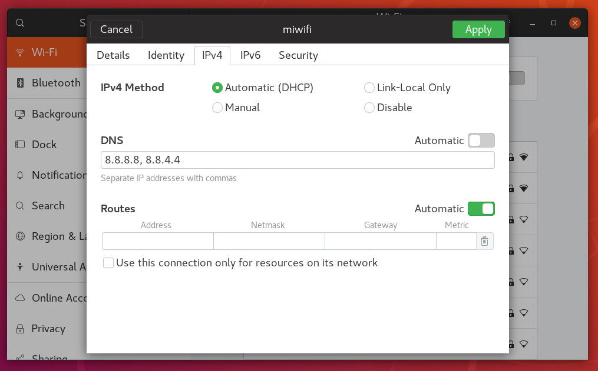

如何在 Ubuntu 18.04 上设置 DNS 域名服务器
域名系统是网络基础设施的核心部分，提供了将域名转换为 IP 地址的方法。您可以将 DNS 视为 Internet 的电话簿。
连接到 Internet 的每个设备都由其 IP 地址唯一标识。当您在浏览器中输入要访问的网站时，必须将其域名转换为其对应的 IP 地址。操作系统首先检查其 hosts 文件中是否存在相应的域，如果域没有条目，它将查询配置的 DNS 名称服务器以解析指定的域名。
域解析后，系统将缓存请求并保留域和相应 IP 地址的记录。
DNS 域名服务器是其他设备用于对请求的域执行 DNS 查找的服务器。
通常， DNS 解析器由 ISP 分配。但是，这些解析器可能很慢或者没有定期更新，这可能会导致查询域时出现延迟，解析为错误的 IP 地址，或者有时您根本无法解析所需的域。
有很多免费的公共 DNS 解析器，它们快速，私密且定期更新。
以下是一些最受欢迎的公共 DNS 解析器：
- 谷歌 (8.8.8.8, 8.8.4.4)
- Cloudflare(1.1.1.1, 1.0.0.1)
- OpenDNS(208.67.222.222, 208.67.220.220)
- Level3(209.244.0.3, 209.244.0.4)
在本指南中，我们将解释如何在 Ubuntu 18.04 上配置 DNS 域名服务器。
如果要为连接到本地网络的所有设备设置 DNS 名称服务器，则最简单和推荐的方法是在家庭路由器上进行更改。
在 Ubuntu 桌面上设置 DNS 名称服务器
在 Ubuntu 18.04 桌面计算机上设置 DNS 名称服务器非常简单，无需任何技术知识。
-
启动设置”=窗口。
-
如果您连接到 WiFi 网络，请单击 “Wi-FI” 选项卡。否则，如果您有有线连接，请单击 “Network” 选项卡。
-
选择要为其设置 DNS 名称服务器的连接，然后单击图标以打开网络管理器。
-
选择 “IPv4” 选项卡。
-
禁用 “Automatic” 切换开关并输入 DNS 解析器 IP 地址，以逗号分隔。我们将使用 Google DNS 名称服务器：

-
单击“应用”按钮以保存更改。
除非您的系统或应用程序缓存 DNS 条目，否则更改会立即生效。
如果要切换回旧设置，请打开网络管理器，转到 IPv4 设置并启用 “Automatic” 切换开关。
在 Ubuntu Server 上设置 DNS 名称服务器
回到过去，每当你想在 Linux 中配置 DNS 解析器时，你只需打开 /etc/resolv.conf 文件，编辑条目，保存文件就可以了。此文件仍然存在，但它是由 systemd-resolved 服务控制的符号链接，不应手动编辑。
systemd-resolved 是一种为本地服务和应用程序提供 DNS 名称解析的服务，它可以使用 Ubuntu 18.04 上的默认网络管理工具 Netplan 进行配置。
Netplan 配置文件存储在 /etc/netplan 目录中。您可能会在此目录中找到一个或两个 YAML 文件。文件名可能因设置而异。通常情况下，该文件名为可以是 01-netcfg.yaml，也可以是 50-cloud-init.yaml ，但在你的系统中，它可能是不同的。
这些文件允许您配置网络接口，包括 IP 地址，网关， DNS 名称服务器等。
要配置 DNS 名称服务器，请使用文本编辑器打开接口配置文件：
sudo nano /etc/netplan/01-netcfg.yaml
该文件 /etc/netplan/01-netcfg.yaml 的内容将如下所示：
network:
version: 2
renderer: networkd
ethernets:
ens3:
dhcp4: no
addresses:
- 192.168.121.199/24
gateway4: 192.168.121.1
nameservers:
addresses: [8.8.8.8, 8.8.4.4]
要配置接口的 DNS 名称服务器，请使用首选 DNS 服务器更改当前 IP 地址。例如，如果要使用 Cloudflare 的 DNS 服务器，则应将该 addresses 行更改为：
nameservers:
addresses: [1.1.1.1, 1.0.0.1]
DNS 服务器必须以逗号分隔。您还可以添加两个以上的名称服务器。
如果该条目不存在，直接添加进来即可。编辑 Yaml 文件时，请确保遵循 YAML 代码缩进标准。如果配置中存在语法错误， Netplan 将无法解析该文件。
完成后保存文件并应用以下更改：
sudo netplan apply
Netplan 将为 systemd-resolved 服务生成配置文件。
要验证是否已设置新的 DNS 解析器，请运行以下命令：
systemd-resolve --status | grep 'DNS Servers' -A2
systemd-resolve -status 打印了很多信息。我们使用 grep 过滤 “DNS Servers” 字符串。输出看起来像这样：
DNS Servers: 1.1.1.1
1.0.0.1
结论
Netplan 是在 Ubuntu 18.04 默认的网络管理工具，不用再直接编辑 /etc/resolv.conf 和 /etc/network/interfaces 这些在以前的 Ubuntu 版本用于配置网络的配置文件。